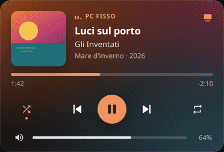
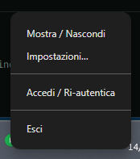
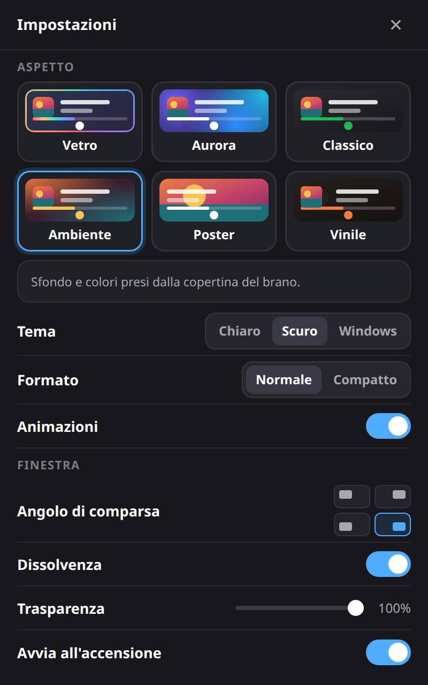

Now playing
Album art, title, artist and album of what is playing on the active device.
Click the tray icon and a now playing card pops up with controls, a seek bar, volume and a device switcher, without opening the Spotify app.

It uses the Spotify Web API, so it controls whichever device is active on your account: PC, phone or a smart speaker. The app's interface is in Italian.
Album art, title, artist and album of what is playing on the active device.
Play and pause, previous and next, shuffle, repeat (off, all, one).
Click or drag to jump anywhere in the song; volume slider and mute for the active device.
Move playback between your PC, your phone or speakers such as an Amazon Echo.
Screen corner, fade animation, transparency, album-art background, launch at startup. Hides by itself when you click elsewhere.
OAuth with PKCE, no client secret. The refresh token is encrypted with Windows DPAPI. Automatic updates from GitHub Releases.


Spotify apps start in Development mode and only accept the users their owner added: that is why you need your own free app.
In the Spotify Developer Dashboard, create an app, tick Web API and add the Redirect URI http://127.0.0.1:8888/callback.
Copy the Client ID (no secret needed) and, under User Management, add the email of your Spotify account.
Click the tray icon, paste the Client ID, then Accedi con Spotify (Log in with Spotify) and approve.
The installer updates itself; the portable exe runs without installing and does not update.
powershell -ExecutionPolicy Bypass -File .\VERIFY.ps1
# or by hand, then compare with SHA256SUMS.txt:
Get-FileHash .\WidgetSpotify-Setup-x.y.z.exe -Algorithm SHA256From the next release, SHA256SUMS.txt and VERIFY.ps1 come with every release. The exe is not code-signed: if SmartScreen warns you, choose More info → Run anyway.
WidgetSpotify-Setup-x.y.z.exe and WidgetSpotify-portable-x.y.z.exe on GitHub Releases.